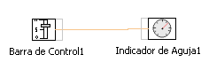

Objetos de Salida de Información/Datos: INSTRUMENTO ANALOGICO CIRCULAR DE AGUJA
Este elemento muestra un valor analógico de salida mediante una aguja que se mueve angularmente sobre una escala circular.
ELEMENTOS QUE SE PUEDEN MODIFICAR
